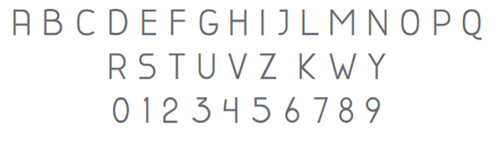
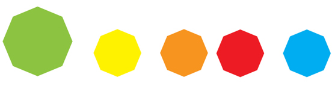

O logotipo do Dente de Leão foi concebido com referência
na estrutura da planta de mesmo nome, conhecida por espalhar
suas pétalas ao sofrer influência de fatores naturais como o
vento. De tal modo, o símbolo tem por objetivo, representar o
conhecimento sendo transmitido de forma natural.
O símbolo também possui um padrão que se assemelha
a uma rede com vários pontos, fazendo referência a tecnologia
que possibilita a comunicação entre os produtores.
Já a tipografia escolhida, trás a questão popular, a produção
praticamente artesanal conforme relatos dos entrevistados sobre
o cultivo de alimentos orgânicos, por meio da tipografia, uma vez
que a escrita com pincél ou caneta é tipica no ambiente da feira
para exibir os nomes e os valores dos produtos expostos nas
bancas.
A tipografia escolhida para o projeto foi a Canela devido a sua fácil reprodutibilidade e leiturabilidade.

×
A paleta de cores do projeto tem como origem o levantamento iconográfico realizado em feiras de produtos orgânicos, supermercados direcionados e pesquisas sobre o tema.
Pode-se observar a forte presença de cores como verde, amarelo, vermelho e laranja, portanto, a cor principal será o verde e
como complementar, está presente a cor ciano.

×